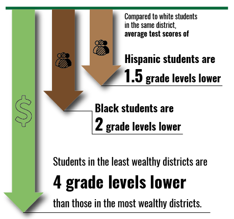
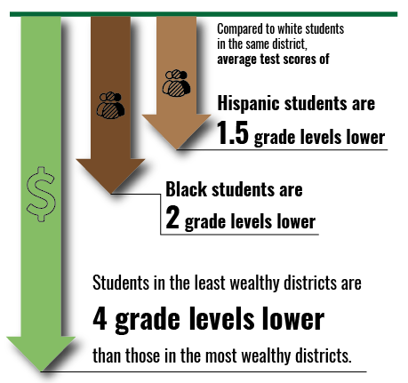
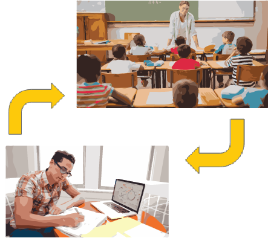
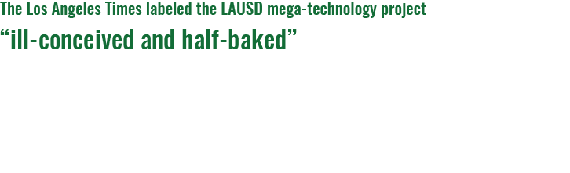

Education Technology in America
What is EdTech
EdTech or Education Technology is a broad term to describe the use of technology in education. This includes computers, tablets, smart whiteboards, software, and much more.Why visualize EdTech data?
Technology brings many opportunities to education, but implemented poorly it can broaden the existing educational divide or simply become a waste of money. By providing some data on how technology affects student outcomes, we hope to enable school administrations to make informed decisions about EdTech investments in their schools.Racial & Socioeconomic Disparity
Race and socioeconomic status put some students at a disadvantage
Racial
Racial inequality in education has persisted throughout American history, and while some progress was made after the Brown v. Board of Education case ended segregation, there are still meaningful racial achievement gaps.
Students of color are statistically less likely to succeed in school and most high school graduates are still white.
Economic
Students of lower socioeconomic status do not benefit from as much family support for private art lessons, educational retreats, test preparation, or targeted tutoring.
Schools in low-income areas are often understaffed and under-resourced.


Racial
Racial inequality in education has persisted throughout American history, and while some progress was made after the Brown v. Board of Education case ended segregation, there are still meaningful racial achievement gaps. Students of color are statistically less likely to succeed in school and most high school graduates are still white.Economic
Students of lower socioeconomic status do not benefit from as much family support for private art lessons, educational retreats, test preparation, or targeted tutoring. Schools in low-income areas are often understaffed and under-resourced. Internet Access at Home Matters
Internet Improves Current Teaching Methods & Unlocks New Ones
New teaching techniques like flipped classrooms and massive online open courses offer new opportunities to teachers and students alike, but both require internet access at home from students.

Home internet can make such a difference that when superintendent Darryl Adams installed wifi hotspots in buses parked around the rural Coachella Valley School District, it helped the graduation rate rise by over 10%.

Tech is a Tool, Not a Panacea
Positive EdTech Outcomes Require Careful Consideration
In 2013, LAUSD spent $1.3B on a program to equip every student with an iPad tablet & educational software from Pearson. However, the initiative failed due to spotty school internet, a lack of teacher training and involvement, and a biased bidding process.
Not only did the technology widen the achievement gap for non-native English speakers due to a lack of bilingual support, it failed to account for other student needs; for example, older students had difficulty typing essays on the keyboard-less iPads.
The “ill-conceived and half-baked” rollout of edtech at LAUSD shows that technology needs to serve real needs of students and teachers to be useful.
Simply putting students in front of computers all day is not effective. As several Kansas schools found out, and as our data shows, overuse can backfire, reducing teachers to “bystanders” and even evoking physical problems such as frequent seizures in epileptic students.


Takeaways
Don’t Widen the Achievement Gap
Education technology proponents should take steps to ensure that technology does not widen pre-existing achievement gaps in education.
Internet is Essential at Home and at School
Education technology is not enough to guarantee better education outcomes. Proponents should take steps to ensure that internet is available wherever technology is used at home and at school.Teacher Training is Vital to EdTech Success
New systems and tools can be difficult to understand. To that end, instructors should be trained to use education technology prior to its implementation.The Team

Yuval Barash

Dylan Fox